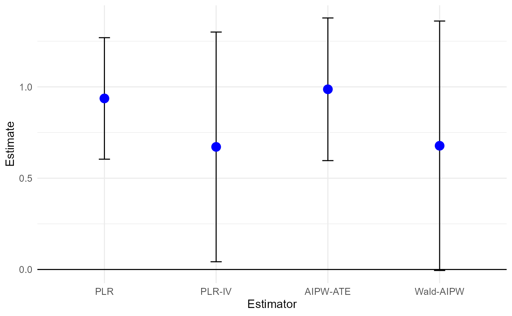

Existing Double ML implementations are too general to easily extract smoother matrices required to be compatible with the get_forest_weights() method. This motivates yet another Double ML implementation.
Usage
dml_with_smoother(
Y,
D,
X,
Z = NULL,
estimators = c("PLR", "PLR_IV", "AIPW_ATE", "Wald_AIPW"),
smoother = "honest_forest",
n_cf_folds = 5,
n_reps = 1,
...
)Arguments
- Y
Numeric vector containing the outcome variable.
- D
Optional binary treatment variable.
- X
Covariate matrix with N rows and p columns.
- Z
Optional binary instrumental variable.
- estimators
String (vector) indicating which estimators should be run. Current menu: c("PLR","PLR_IV","AIPW_ATE","Wald_AIPW")
- smoother
Indicate which smoother to be used for nuisance parameter estimation. Currently only available option
"honest_forest"from the grf package.- n_cf_folds
Number of cross-fitting folds. Default is 5.
- n_reps
Number of repetitions of cross-fitting. Default is 1.
- ...
Options to be passed to smoothers.
Value
A list with three entries:
results: a list storing the results, influence functions, and score functions of each estimatorNuPa.hat: a list storing the estimated nuisance parameters and the outcome smoother matrices
References
Chernozhukov, V., Chetverikov, D., Demirer, M., Duflo, E., Hansen, C., Newey, W., & Robins, J. (2018). Double/debiased machine learning for treatment and structural parameters. The Econometrics Journal, 21(1), C1-C68.
Knaus, M. C. (2024). Treatment effect estimators as weighted outcomes, https://arxiv.org/abs/2411.11559.
Examples
# \donttest{
# Sample from DGP borrowed from grf documentation
n = 200
p = 5
X = matrix(rbinom(n * p, 1, 0.5), n, p)
Z = rbinom(n, 1, 0.5)
Q = rbinom(n, 1, 0.5)
W = Q * Z
tau = X[, 1] / 2
Y = rowSums(X[, 1:3]) + tau * W + Q + rnorm(n)
# Run outcome regression and extract smoother matrix
# Run DML and look at results
dml = dml_with_smoother(Y,W,X,Z)
results_dml = summary(dml)
#> Estimate SE t p
#> PLR 0.93679 0.16871 5.5527 8.879e-08 ***
#> PLR-IV 0.67135 0.31891 2.1052 0.03652 *
#> AIPW-ATE 0.98686 0.19805 4.9828 1.353e-06 ***
#> Wald-AIPW 0.67755 0.34634 1.9563 0.05182 .
#> ---
#> Signif. codes: 0 '***' 0.001 '**' 0.01 '*' 0.05 '.' 0.1 ' ' 1
plot(dml)

# Get weights
omega_dml = get_outcome_weights(dml)
# Observe that they perfectly replicate the original estimates
all.equal(as.numeric(omega_dml$omega %*% Y),
as.numeric(as.numeric(results_dml[,1])))
#> [1] TRUE
# The weights can then be passed to the cobalt package for example.
# }